Guia do editor do mundo
Como usar o editor que agora fica dentro do jogo: o World Link inteiro e, pelo botão Mapas ▾, os mapas que ficam fora dele (Atlans, Kalima, Loren Market…). O que você faz aqui é o que o jogo mostra.
1. Abrir o editor
- World Link: dois cliques em ABRIR-EDITOR-WORLD-LINK.cmd. O mundo leva uns 30 segundos para carregar.
- Um mapa fora do World Link (Atlans, Kalima, Loren Market, Doppelganger…): use ABRIR-EDITOR-MAPA.cmd e digite o número do mapa. Também dá para trocar de dentro do editor, pelo botão Mapas ▾.
- O editor não precisa de login e não mexe no servidor.
2. A tela
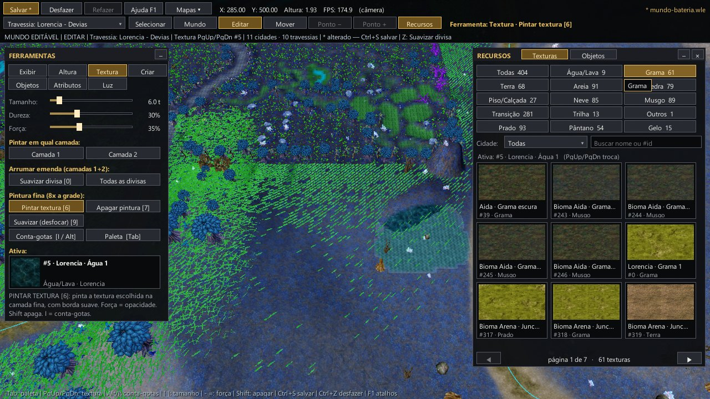
1 2 3 4 5 6 7 8 9 10 11 12 13 14 15 16 17 18 19- Salvar (Ctrl+S). Fica dourado e com * quando há alteração não salva.
- Desfazer / Refazer (Ctrl+Z / Ctrl+Y). Um passo por pincelada.
- Ajuda F1: a lista de todos os atalhos, com busca.
- Mapas ▾: abre um mapa fora do World Link (ou volta ao World Link).
- Posição do cursor (X, Y), altura do chão e FPS.
- Arquivo que está sendo editado (com * quando falta salvar).
- Lista das cidades: escolha uma e a câmera vai até ela.
- Selecionar · Mundo · Editar · Mover · Ponto − · Ponto +: cidade e travessia (ver seção 9).
- Recursos: abre e fecha a janela de texturas e objetos (Tab).
- Ferramenta ativa.
- Linha de estado: modo, o que está sob o cursor (cidade, setor, divisa, travessia, “Mapa Atlans (individual)”) e o último aviso.
- FERRAMENTAS: abas Exibir, Altura, Textura, Criar, Objetos, Atributos e Luz.
- Tamanho, Dureza e Força do pincel ([ ] mudam o tamanho; - = a força).
- Botões da aba aberta (aqui, a aba Textura). O texto embaixo explica a ferramenta escolhida.
- RECURSOS: abas Texturas e Objetos.
- Categorias (Grama, Terra, Areia, Pedra, Neve, Musgo, Prado, Pântano, Gelo…). Transição é um filtro extra que combina com a categoria.
- Cidade: de qual cidade vêm as texturas/objetos. Qualquer cidade serve em qualquer lugar.
- As cartas: clique numa para usar. A de borda clara é a ativa.
- Linha de ajuda com os atalhos principais.
3. Andar pela câmera
| Mouse / tecla | O que faz |
|---|---|
| Botão direito + arrastar | Gira a câmera em volta do ponto do centro, como no editor do C++ (arrastar para a direita gira para o mesmo lado do C++). |
| Botão do meio + arrastar | Arrasta o mapa. |
| Clique do meio (sem arrastar) | Seleciona a área sob o cursor: cidade, setor ou travessia. |
| Roda | Aproxima ou afasta (10% por entalhe). |
| W A S D | Anda com a câmera. |
| Home | Mundo inteiro. No mapa individual, o mapa inteiro. |
| F6 / F7 | Cidade anterior / próxima. |
| F8 | Próxima travessia. |
| F5 | Volta ao ponto inicial. |
| F2 · F3 | Muda o céu (dia, entardecer, noite, automático) · liga/desliga a neblina (só no editor). |
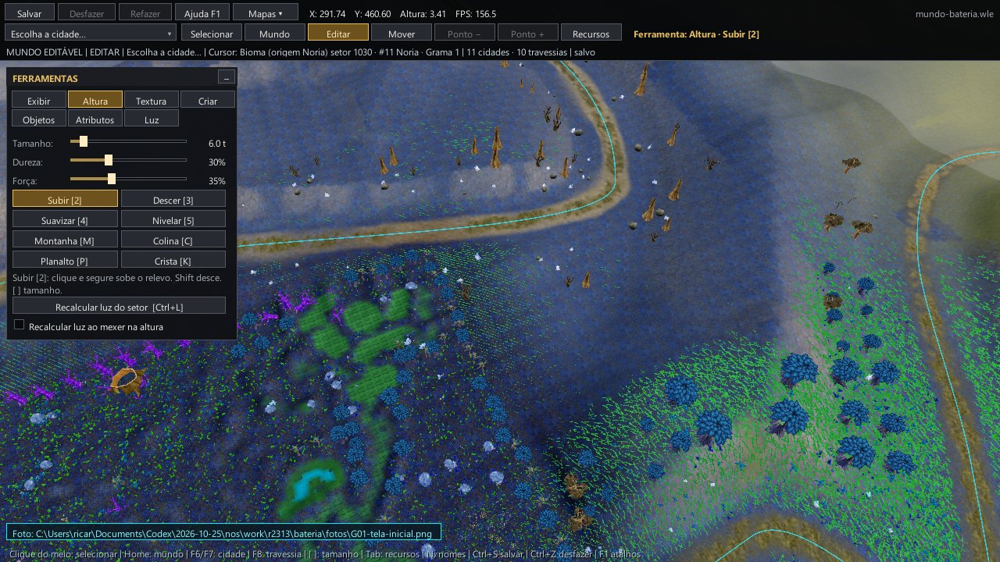
4. Primeiros 10 minutos
- Abra o ABRIR-EDITOR-WORLD-LINK.cmd e espere o mundo aparecer.
- Olhe em volta: botão direito gira, botão do meio arrasta, a roda aproxima. Home mostra tudo.
- Vá até uma cidade: escolha na lista do canto (7) ou use F6/F7. Aproxime com a roda.
- Suba um morro: FERRAMENTAS → Altura → Subir [2]. Clique e arraste no chão. Shift desce. Para um monte pronto, use Montanha [M] e segure o botão.
- Pinte: FERRAMENTAS → Textura → Pintar textura [6] → Paleta [Tab]. Escolha a categoria, a cidade de origem e clique numa carta. Arraste no chão.
- Errou? Ctrl+Z desfaz a última pincelada (um passo por traço).
- Ponha um objeto: 8 (Objetos) → Escolher modelo… → escolha a cidade e a categoria (Árvores, Casas…) → clique na carta e depois no chão.
- Salve com Ctrl+S. O botão Salvar deixa de ficar dourado.
- Veja no jogo: feche o editor e entre no jogo normal. O jogo lê o mesmo arquivo (seção 14) e mostra a altura, a pintura e os objetos.
- Mapa fora do World Link: Mapas ▾ → Atlans. O editor reabre sozinho no Atlans. Para voltar: Mapas ▾ → « Voltar ao World Link.
5. Altura e Esculpir
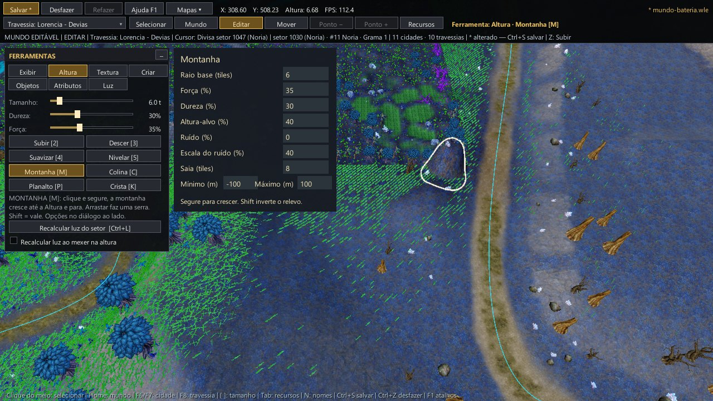
6. Textura
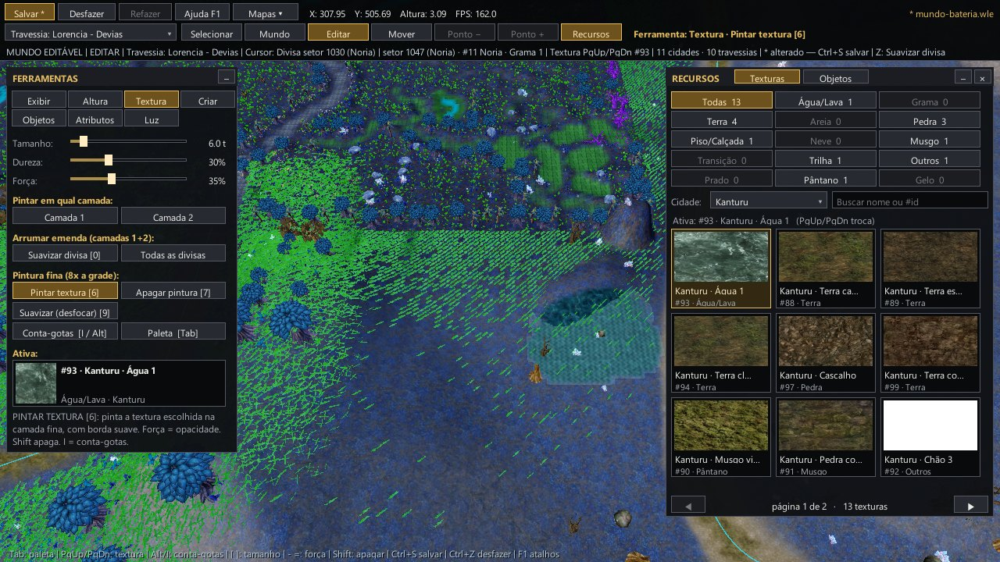
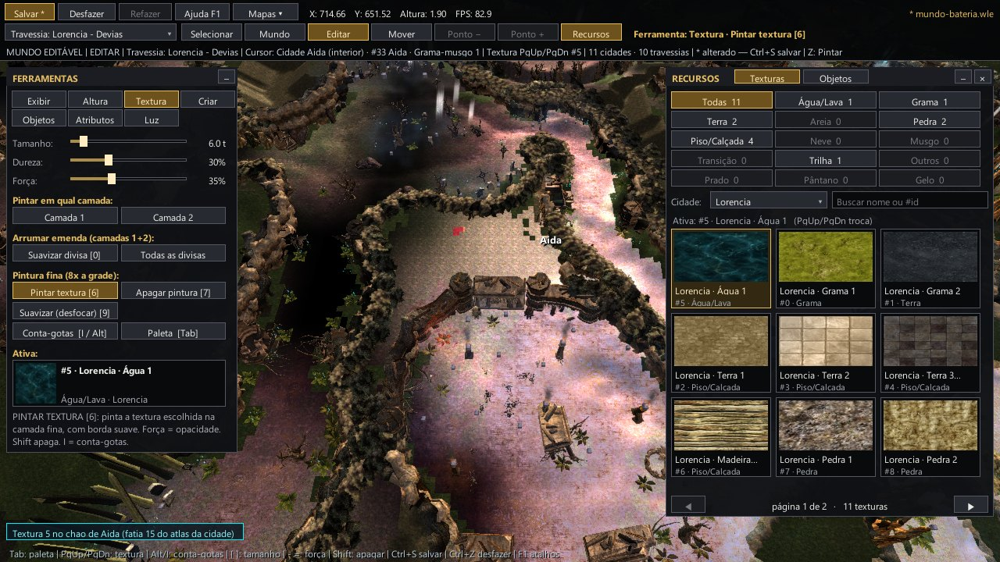
- Camada 1 troca a textura de base da célula. Camada 2 pinta a de cima, com transparência nos cantos.
- Pintar textura [6] é a pintura fina, com borda macia. Apagar pintura [7] volta ao chão original.
- Suavizar (desfocar) [9] mistura a pintura. Suavizar divisa [0] arruma a emenda entre duas áreas. Todas as divisas faz isso no escopo escolhido: clique em Prévia e depois em Aplicar.
- Conta-gotas: I ou Alt+clique pega a textura do chão. PgUp/PgDn passam a textura.
- Nas ruas das cidades Mega o pincel troca a textura de cima na hora, como no C++, e as bordas ficam macias, sem os quadradinhos de antes.
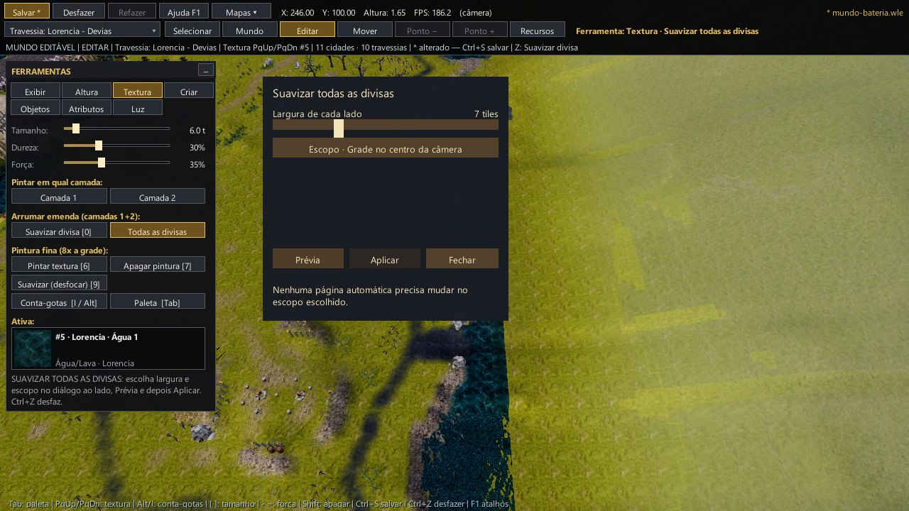
7. Recursos: texturas e objetos de qualquer cidade
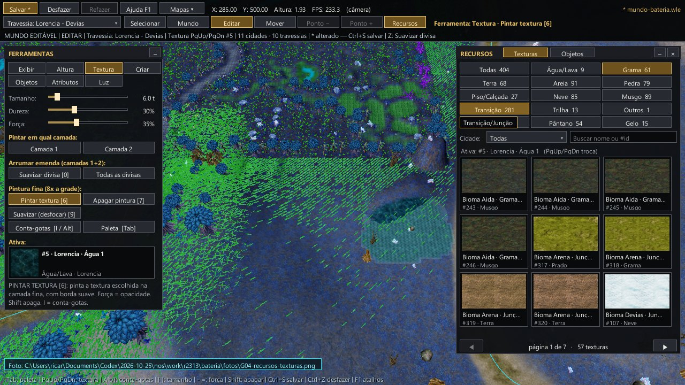
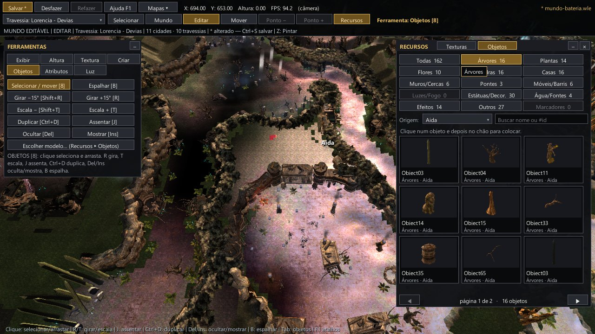
A mesma textura pode aparecer em mais de uma categoria (por exemplo, uma mistura de grama com pedra aparece em Prado e em Pedra). Transição é um filtro extra: ligado, mostra só as misturas da categoria escolhida.
8. Objetos
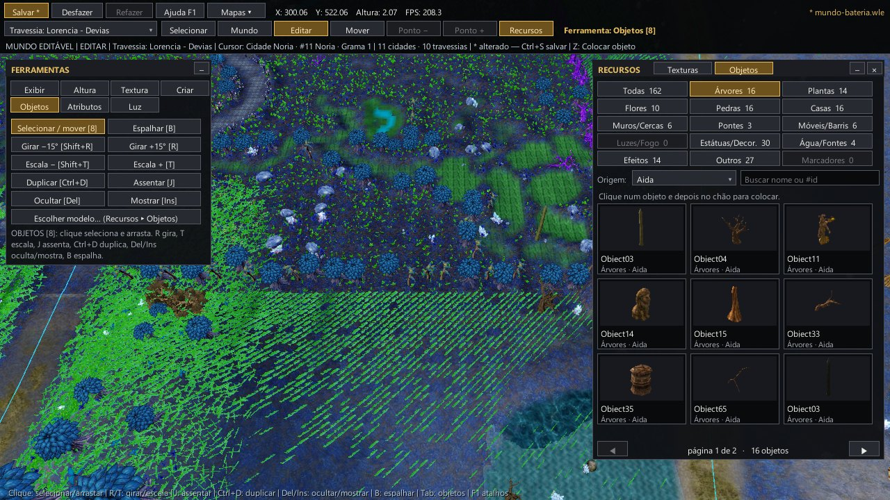
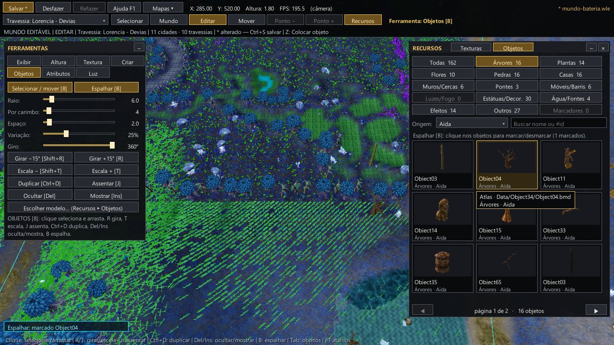
- Clique seleciona e arrasta. G move, R/Shift+R giram 15°, T/Shift+T mudam a escala, Ctrl+D duplica, J assenta no chão, Del oculta, Ins mostra, Esc cancela.
- Os objetos seguem o chão quando você sobe ou desce o terreno embaixo deles.
9. Atributos (onde se anda, área segura, PvP)
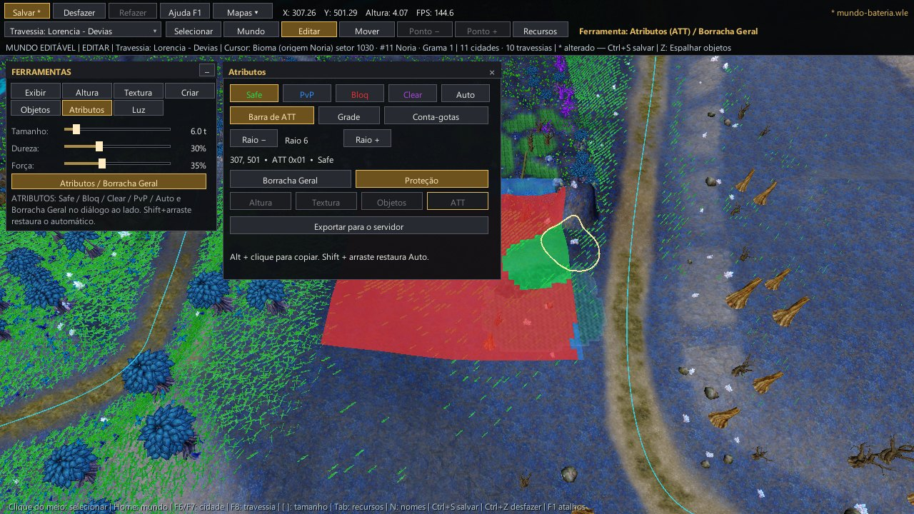
Exportar para o servidor só grava os arquivos numa pasta do seu PC (com um LEIA-ME). Nada vai para o servidor sozinho: instalar é decisão sua. Salve antes de exportar.
10. Cidade e travessia
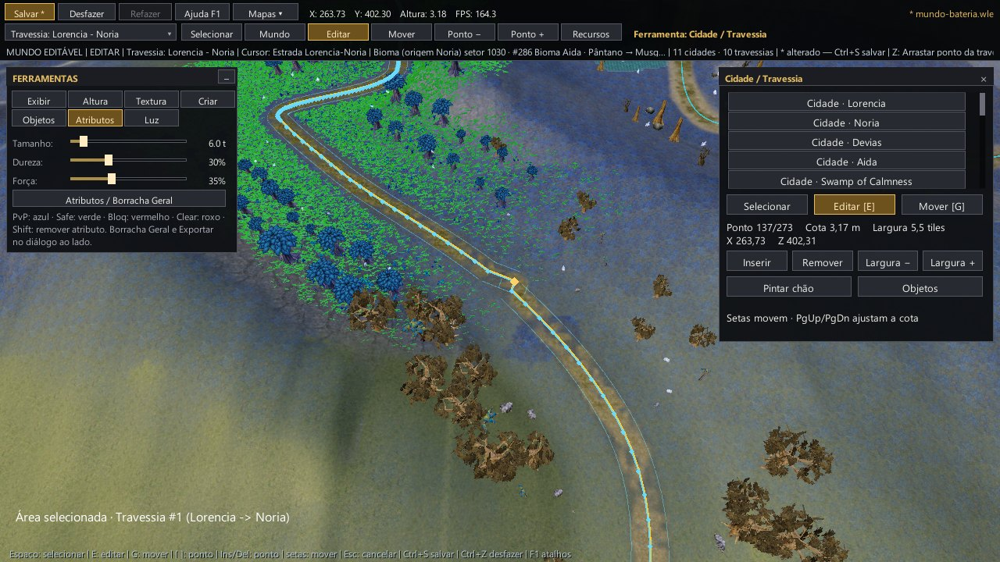
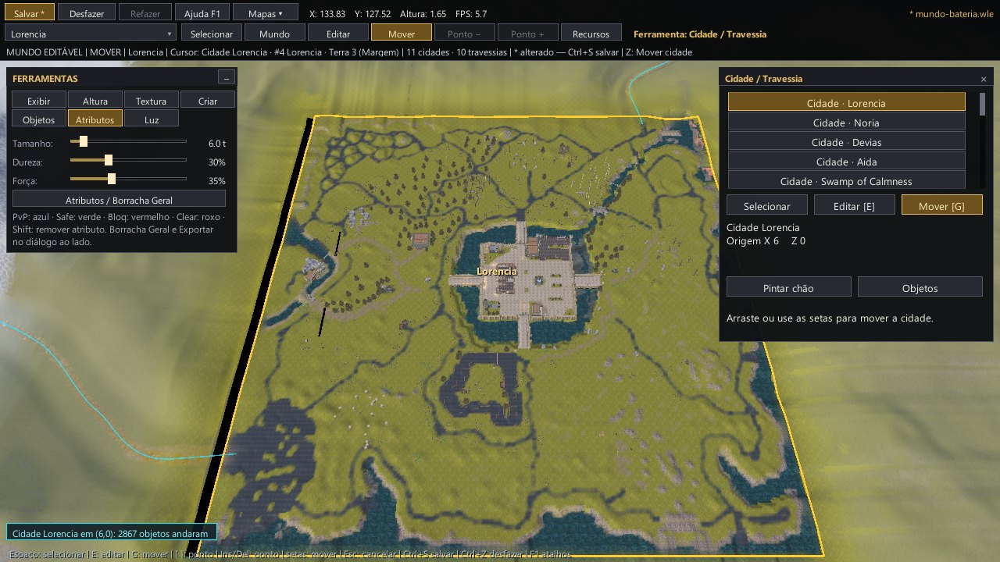
Atenção: cidade movida não vai para o servidor. A colisão do servidor continua a antiga, e a exportação fica recusada enquanto houver cidade fora do lugar.
11. Criar terreno
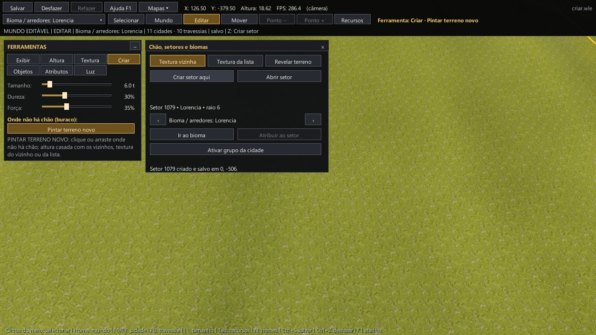
12. Luz do chão
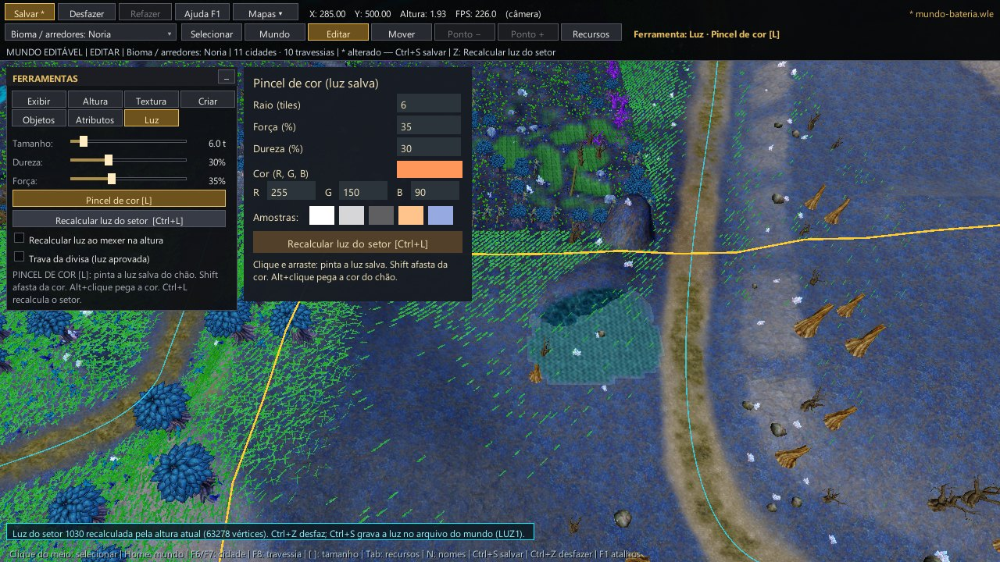
A luz é só do chão. Personagens, monstros e NPCs não mudam de cor por causa dela.
13. Mapa individual (fora do World Link)
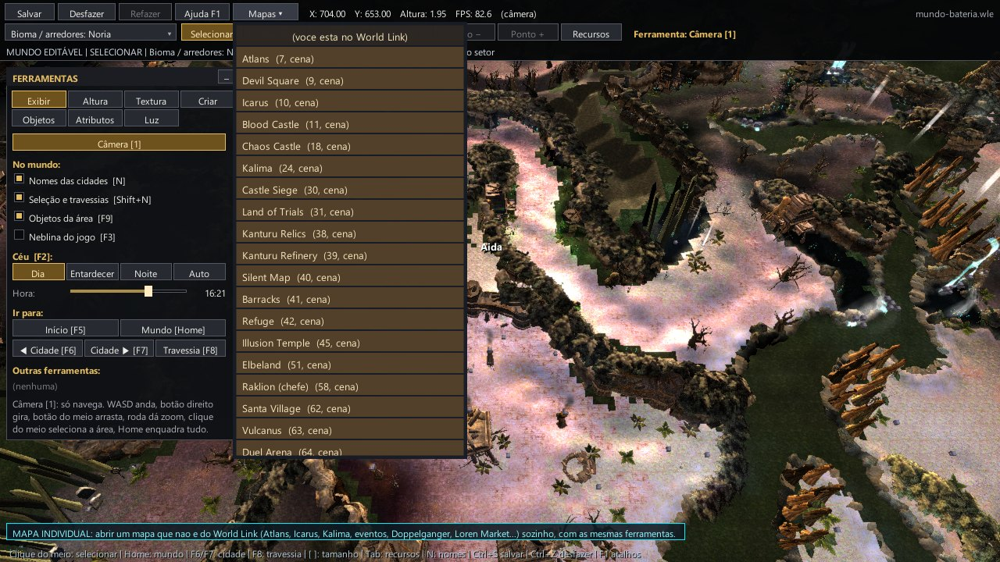
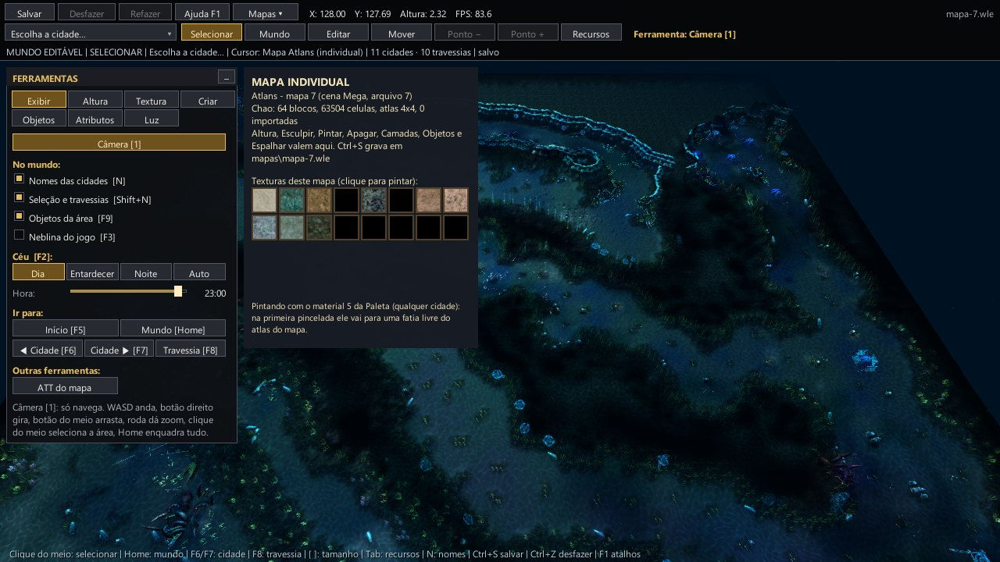
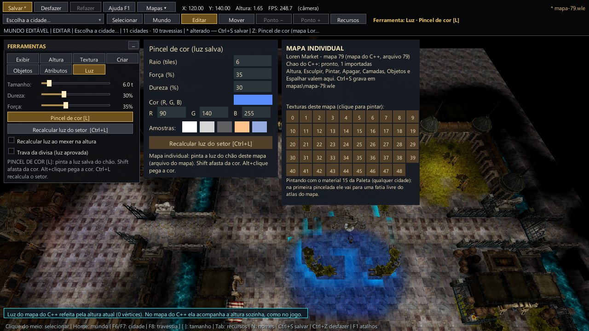
1 2 3 4 5 6- FERRAMENTAS na aba Luz.
- Pincel de cor: raio, força, dureza, a cor e amostras. Recalcular luz refaz a luz deste mapa.
- MAPA INDIVIDUAL: nome, tipo e arquivo do mapa.
- Texturas deste mapa: clique numa fatia para pintar com ela. Uma textura de outra cidade (pela Paleta) vai para uma fatia livre.
- Luz pintada de azul com o Pincel de cor. O jogo mostra igual: a luz fica gravada no arquivo do mapa.
- Aviso da última ação.
- Valem: Altura e Esculpir, Pintar/Apagar/Camada 1/Camada 2, Objetos e Espalhar, ATT do mapa (Exibir → Outras ferramentas; exporta só no seu PC) e Luz (pincel de cor e recalcular).
- Ficam desligadas, porque são só do World Link: Criar, Atributos do World Link, Travessia/Mover e as divisas.
- No mapa do C++ (Loren Market, Doppelganger, Lobby) a luz do chão acompanha a altura sozinha, como no jogo. Na cena Mega (Atlans, Kalima…) use Recalcular luz depois de mexer na altura.
- Cada mapa tem o próprio arquivo (seção 14). O arquivo do World Link nunca é tocado nesse modo.
14. Atalhos
| Tecla | O que faz |
|---|---|
| 1 a 7 | Câmera, Subir, Descer, Suavizar, Nivelar, Pintar, Apagar pintura |
| 8 · F11 | Objetos |
| 9 · 0 | Desfocar · Suavizar divisa |
| M C P K | Esculpir: Montanha, Colina, Planalto, Crista |
| B | Espalhar objetos |
| L · Ctrl+L | Pincel de cor · Recalcular luz |
| [ ] | Tamanho do pincel |
| - = | Força do pincel |
| Shift | Inverte o pincel (desce, apaga, afasta da cor) |
| Alt+clique · I | Conta-gotas |
| PgUp PgDn | Textura anterior/próxima |
| Tab | Abre/fecha Recursos |
| N · Shift+N | Nomes das cidades · contorno da seleção e travessias |
| Home · F5 | Mundo (ou mapa) inteiro · ponto inicial |
| F6 F7 · F8 | Cidade anterior/próxima · próxima travessia |
| F9 | Mostra/oculta os objetos da área |
| F1 · F2 · F3 | Atalhos · céu · neblina |
| Espaço E G | Cidade/travessia: Selecionar, Editar, Mover |
| Setas · Shift+setas | Move a seleção 1 ou 10 tiles |
| G R T J Del Ins Ctrl+D | Objetos: mover, girar, escala, assentar, ocultar, mostrar, duplicar |
| Ctrl+S Ctrl+Z Ctrl+Y | Salvar, desfazer, refazer |
| Ctrl+= Ctrl+- | Aumenta/diminui a interface (100% a 200%) |
| Esc | Cancela o gesto e volta a Selecionar |
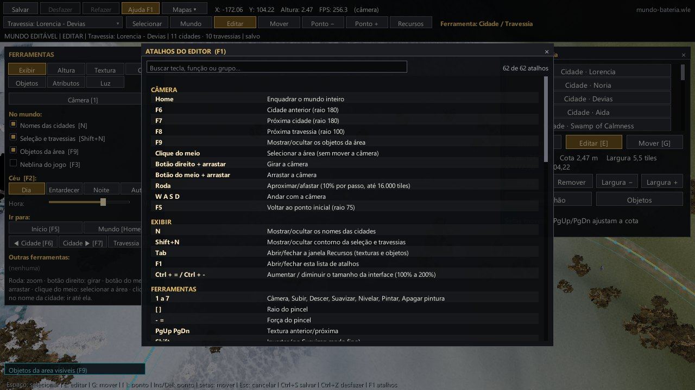
15. Onde ficam os arquivos
- World Link:
Documentos\UltimateMU-Mundo\mundo-r2280.wle. Cada vez que você salva, a versão anterior vai paraUltimateMU-Mundo\copias(ficam as 30 últimas). - Mapas individuais:
Documentos\UltimateMU-Mundo\mapas\mapa-<número>.wle(um por mapa). - O jogo lê esses arquivos sozinho. Sem eles, o jogo fica como era.